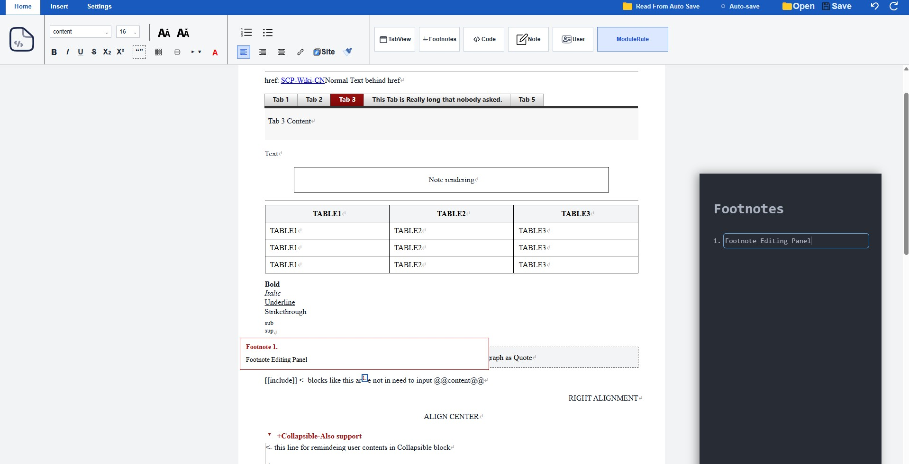

Desktop WYSIWYG editor for Wikidot
Write SCP articles the way they’ll look.
A desktop editor for the SCP Wiki. Write in a visual editor — headings, blockquotes, tables, footnotes, tabviews and more render as you type — then export clean Wikidot wikitext, ready to paste into the wiki.

How it works
Reversible by design.
Your text moves through a two-way pipeline, so what you see and what you export stay in sync.
Wikitext
Your raw Wikidot source — the text the wiki actually accepts.
ProseMirror JSON
A structured document tree — the single source of truth while you edit.
WYSIWYG
The rendered editor — headings, tables and footnotes shown as they’ll appear.
Features
Built for SCP articles.
Not a generic rich-text editor. Every element converts back to clean Wikidot wikitext.
Visual editing
Headings, bold, italic, underline, strike, super/subscript and alignment.
Blockquotes
Both [[div class="blockquote"]] and
line-prefix > syntax.
Tables
Full table editing with header rows.
Footnotes
Wikidot-style footnotes with a dedicated side panel.
Tabviews
[[tabview]] / [[tab]]
as editable tabs.
Redacted spans
Blackout / redaction styling for hidden text.
Autosave
Automatic local saving to
.txt while you write.
Fully local
Runs entirely offline. Your work never leaves your machine.
Known limitation
Why [[include]] can’t be WYSIWYG.
[[include]] looks like C’s
#include, but it isn’t textual
substitution — it’s a parameterized macro with
variable interpolation and silent fallback.
Macro expansion is lossy and, when nested, irreversible: after expansion, template content, interpolated arguments and authored text are indistinguishable, so there’s no correct place to write an edit back. Includes are one-way only.
Download
Get it, or build it.
Grab a build for your platform, or compile from source.
# prerequisites: Rust, Node.js, Tauri deps npm install cargo tauri dev # run cargo tauri build # release
Tech stack